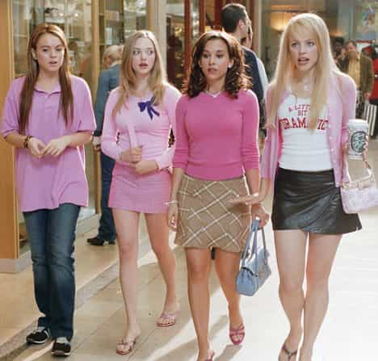

Vincent is an online entrepreneur currently living in beautiful Thailand. I've written books about seduction, manhood, and meditation. I write about seduction and host a podcast on my website, www.RealNaturalSeduction.com


When I was writing my last article, “When Her ‘No’ Means ‘Yes'”, I considered the possibility that it might cause a bit of a stir. But the magnitude of the enraged reaction it received on Twitter and Facebook was far beyond anything I had imagined.
How is it possible that 14,000 people have liked this trash on Facebook? It makes me want to puke. http://t.co/Sx3pgftzYb
— chelsea lobey (@chelsealaine) February 9, 2014
@ReturnOfKings – what a bunch of scum – apparently No Means yes still –@HuffPostWomen #feminism #rape #women http://t.co/ZhQ14lZvvw
— #coffee needed stat! (@eveirecarolina) February 9, 2014
When Her No Means Yes http://t.co/EW2vNqXnEv via @returnofkings Living in Thailand undoubtly to avoid US prison where he’d learn No=ass rape
— Lisa (@EcoLisa) February 7, 2014
…and so forth. On top of that, my eBook on overcoming last minute resistance to sex was banned from Amazon following the nagging of a nasty HuffPo columnist.
With morbid curiosity I waded through the Twitter feeds and Facebook messages of people calling me every name under the sun. They had absolutely no qualms about publicly calling me a rapist, demanding that I be castrated, suggesting I ought to be imprisoned, butt raped, and finally—perhaps after the sequential fulfillment of the previous punishments—executed.
In the process of sifting through these humanitarian Tweets and shares, I happened to notice something interesting: there is a strong correlation between how loudly a woman screeches her “I’m a victim of the patriarchy”, “all sex is rape”, “men are oppressors” feminist party line and how physically unattractive she is.
In short, the most vocal feminists are the ugliest.
To sexy girls and to guys who get a lot of ass, this all likely comes as no surprise. The ugly girls in school never got to date the cool guys. They wouldn’t even look at them. The pretty girls got all the attention, hosted all the cool parties, and generally enjoyed a higher quality of life. They received copious attention from the worthiest males by virtue of their superior genetics and social status.

So sadly, many of the ugly, socially awkward, unwanted chicks—rather than work to improve themselves and make lemonade out of lemons (as we encourage men and women alike to do here at ROK)—found an ideology that elevates their misfortune into virtue: feminism.
It’s no coincidence that the most insidious ideologies of the world, those responsible for incomprehensible death and destruction, always portray their target market as victims. This is the first prong of the strategy. The second prong is to sell these emotionally vulnerable folks a beautiful dream in which they are elevated out of their quagmire with little to no effort on their part and are simultaneously revenged against their evil oppressors.
Communism, for instance, depends on poor people hating and feeling victimized by the rich, because it’s the rich’s fault they’re poor. “If only communism were instituted, our poverty would disappear!”
WWII Nazism depended on convincing the German people that the Jews were to blame for all their problems. “If only we got rid of all the Jews, our businesses and communities would be restored to their former glory.”
And finally, feminism—perhaps a more virulent ideology than even the communism that destroyed my fatherland—feeds on perceived patriarchal victimhood and sells a dream to women that is heinously divorced from natural law: equality.
Of course, any time you go against nature the result is always weird and perverse (as Tuthmosis kindly pointed out).

To wit.
Woman are told, in effect: “You’re no less attractive than those other girls. Just because they won the genetic lottery doesn’t mean they’re better than you. All women are equally beautiful by virtue of having been born. You’re just a victim. You’ve been exploited. Men are to blame. They’re hideous oppressors. All of them. (Psst…let’s get ’em!)”
Shakespeare wrote, “Hell hath no fury like a woman scorned.” But old Bill didn’t get it exactly right.
If a beautiful woman is scorned, it won’t be long before another man comes along and helps her forget all about the last guy who broke her heart. That, at least, confers acknowledgment of existence to the woman.
But if an ugly woman is ignored because no quality man would want her, no matter how witty and spectacularly GIF-laden her Tumblr blog may be, that is the ultimate scorn. It’s less than scorn. It’s a total indifference to her existence. A vacuum.
…and nature abhors a vacuum.
Curious to quantify this phenomenon, I went through over 200 tweets from angry, female feminuts and rated the ones who had photos on the ubiquitous 1-10 attractiveness rating scale. Further, I mentally appended a “WB” or “WNB” to each datum (“would bang” and “would NOT bang”, respectively) to indicate relative penetrability.
On average, the angry female Tweeters hovered at 6/10. Frankly put, the majority of these chicks are Quasi Motresses.
I get it: being ugly sucks. But you know what? We all have our own bag. So come on, ladies. Gather yourselves up, have some pride and make the most of this short life instead of blaming others—in this case, men—for your problems.
Feminism is warm and consoling like an opiate. It makes you feel good. It exonerates you of having to improve yourself, to move forward and to make honest assessments about yourself at the expense of your ego.
Now I admit that there were a few sexy girls amongst the Tweeters who threw me for a pleasant curveball. If it weren’t for these few attractive outliers, whose genetic largess graciously brought up the average, these girls could singlehandedly constitute the non-human cast of Lord of The Rings.
After going through all of those hyperbolic, inane Tweets, I’m in bad need of a shower and a booty call to one of my sexy Thai girlfriends. The catharsis is complete. Now it’s time to put these foul harpies behind me and get back to living the good life.
Read More: The 9 Ugliest Feminists In America